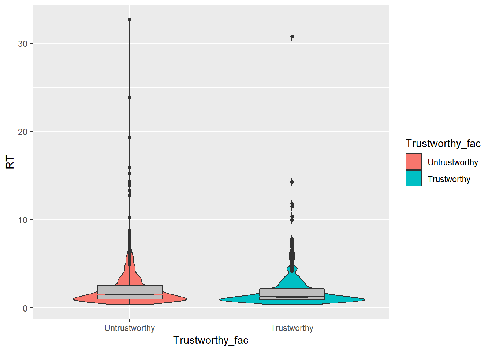
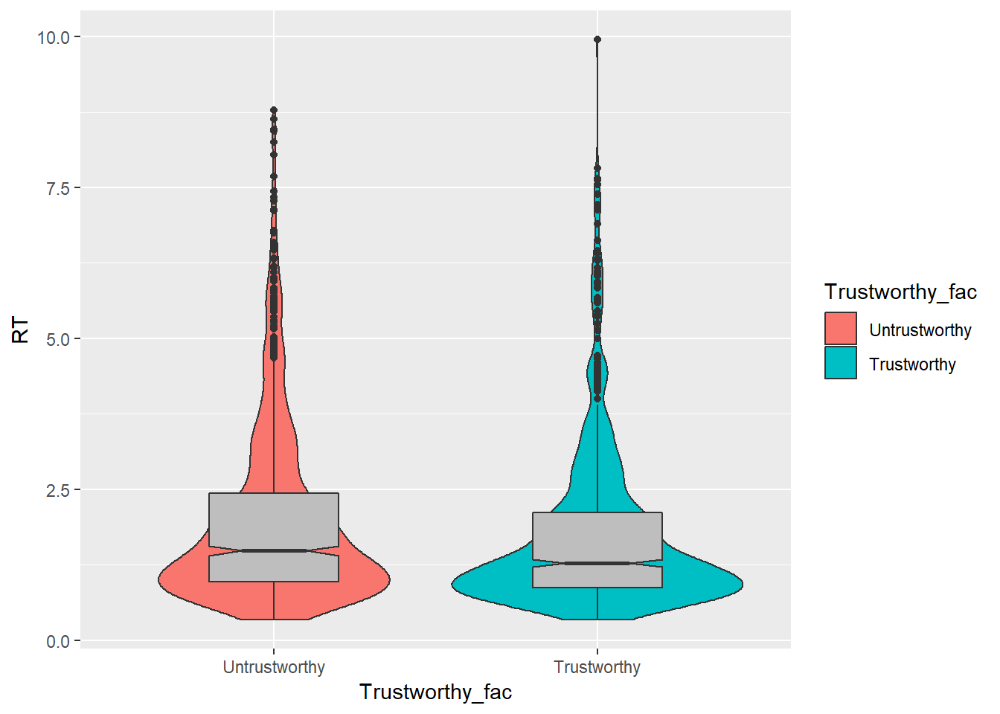
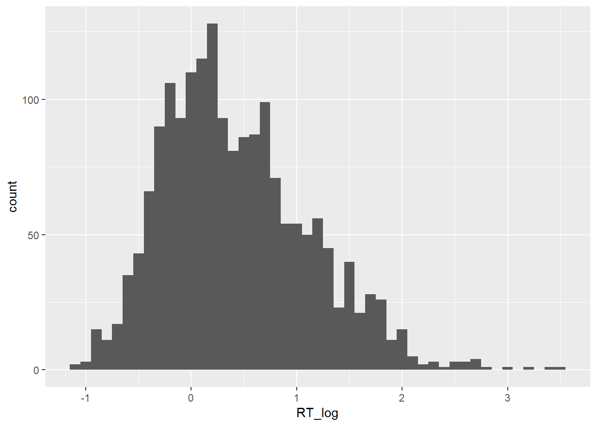

mlm-workshop
Philip
1 december 2018
library(brms)
library(ggplot2)
library(bayesplot)
library(tidyverse)
library(kableExtra)d <- read.delim(url("https://raw.githubusercontent.com/philipparnamets/mlm-workshop/master/data/d_export.txt"))summary(d)## Subject Stimuli Trustworthy Face_trust
## Min. :13712 Min. : 1.00 Min. :-0.5 Min. :2.806
## 1st Qu.:14293 1st Qu.:16.00 1st Qu.:-0.5 1st Qu.:3.168
## Median :14767 Median :32.00 Median : 0.0 Median :3.360
## Mean :15343 Mean :32.45 Mean : 0.0 Mean :3.411
## 3rd Qu.:16425 3rd Qu.:49.00 3rd Qu.: 0.5 3rd Qu.:3.593
## Max. :17668 Max. :64.00 Max. : 0.5 Max. :4.214
## RT
## Min. : 0.3360
## 1st Qu.: 0.9178
## Median : 1.3837
## Mean : 2.0278
## 3rd Qu.: 2.3334
## Max. :32.7068Data comes from a trust learning experiment and represents a subset of 30 participants. Each participants did 30 trials with social partners from a trustworthy group and 30 trials with social partners from an untrustworthy group.
The aim of the analysis will be to understand if participant response times differ between groups.
Data visualization and preparation
Relationship between RT and Trustworthiness
# create factor
d$Trustworthy_fac <- factor(d$Trustworthy, labels = c("Untrustworthy",
"Trustworthy"))
# summary table
d %>% group_by(Trustworthy_fac) %>%
summarise(Average = mean(RT),
Median = median(RT),
SD = sd(RT),
SE = SD/sqrt(n())) %>%
kable(.) %>%
kable_styling(., bootstrap_options = c("striped", "responsive", "condensed"),
full_width = F)| Trustworthy_fac | Average | Median | SD | SE |
|---|---|---|---|---|
| Untrustworthy | 2.204422 | 1.498379 | 2.369325 | 0.0789775 |
| Trustworthy | 1.851272 | 1.280572 | 1.815688 | 0.0605229 |
# plot
ggplot(data = d) +
aes(x = Trustworthy_fac, y = RT,
fill = Trustworthy_fac) +
geom_violin() +
geom_boxplot(fill="gray",
notch = T ,
width = 0.4) 
Lot’s of outliers, let’s filter the data at 10s, which seems to be plenty to make a response anyways..
# plot
d %>% filter(RT<10) %>%
ggplot(data = .) +
aes(x = Trustworthy_fac, y = RT,
fill = Trustworthy_fac) +
geom_violin() +
geom_boxplot(fill="gray",
notch = T ,
width = 0.4) 
Response time data are skewed:
ggplot(d) +
aes(RT) +
geom_histogram(binwidth = 0.25)
One way of dealing with this is log-transforming the data.
# log transform
d$RT_log <- log(d$RT)
#plot
ggplot(d) +
aes(RT_log) +
geom_histogram(binwidth = 0.1)